Case Study · Editorial Design
From Vogue to Dachau
The Many Lives of Lee Miller. A woman who continually inserted herself into places she was not expected to be.

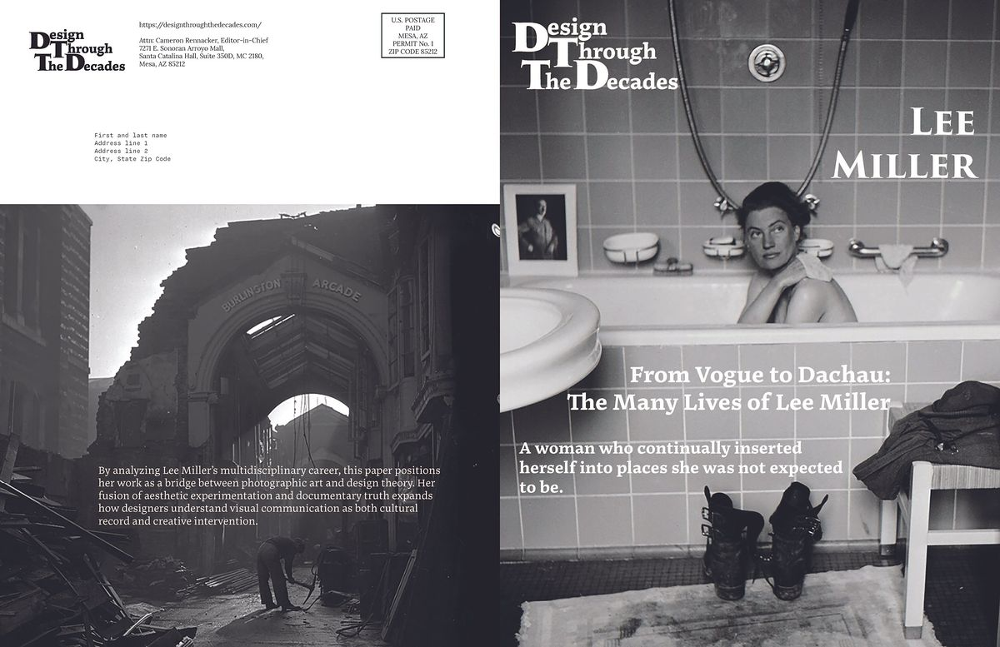

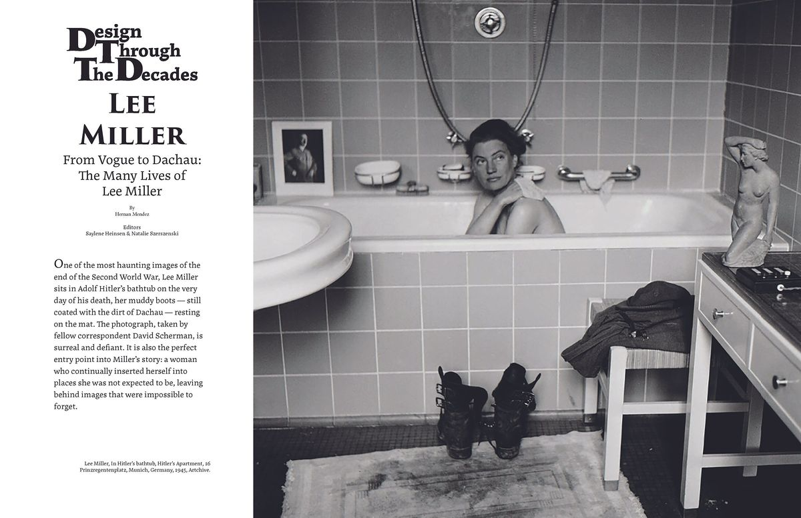

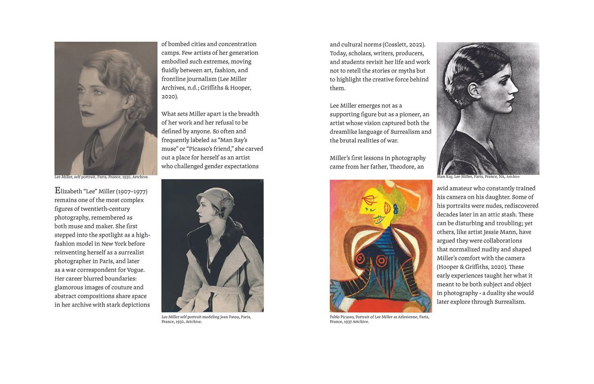

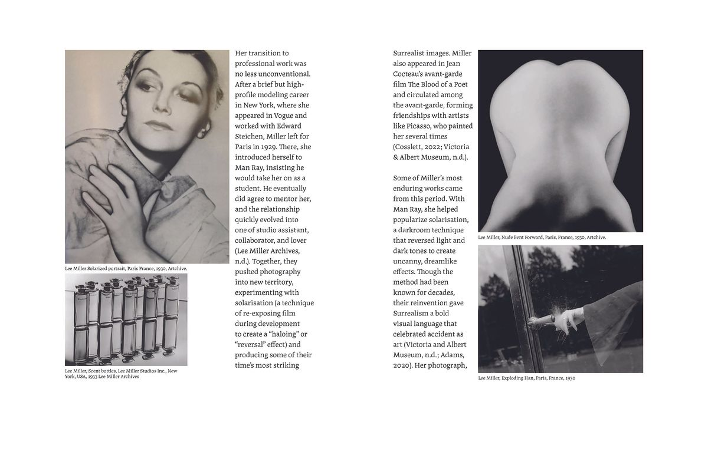

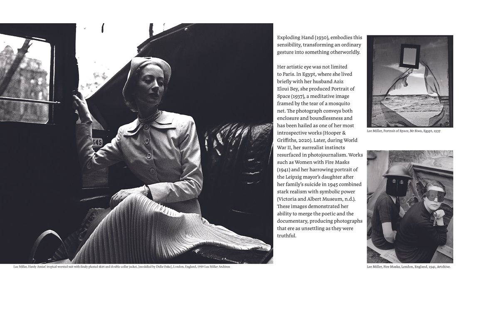

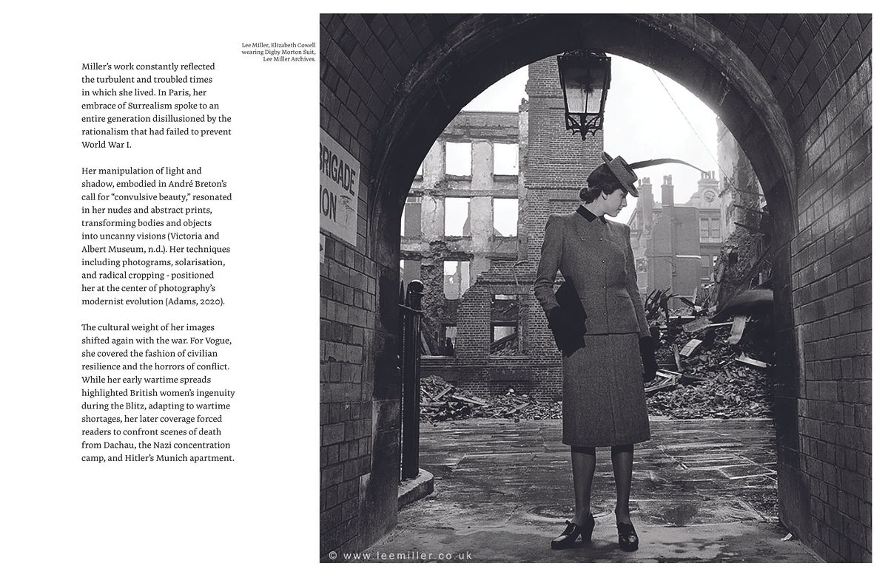

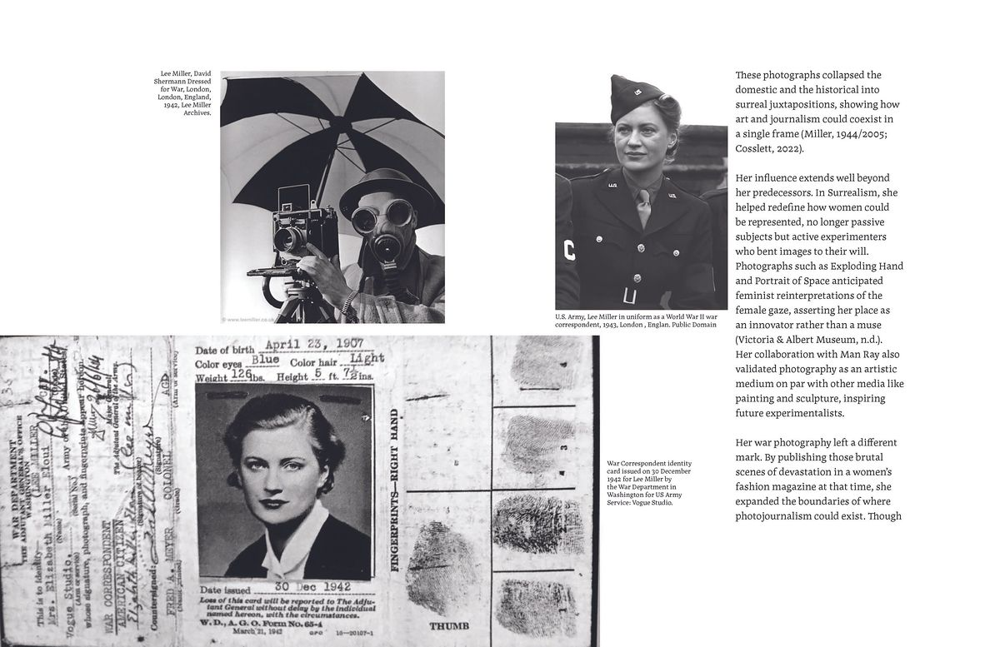

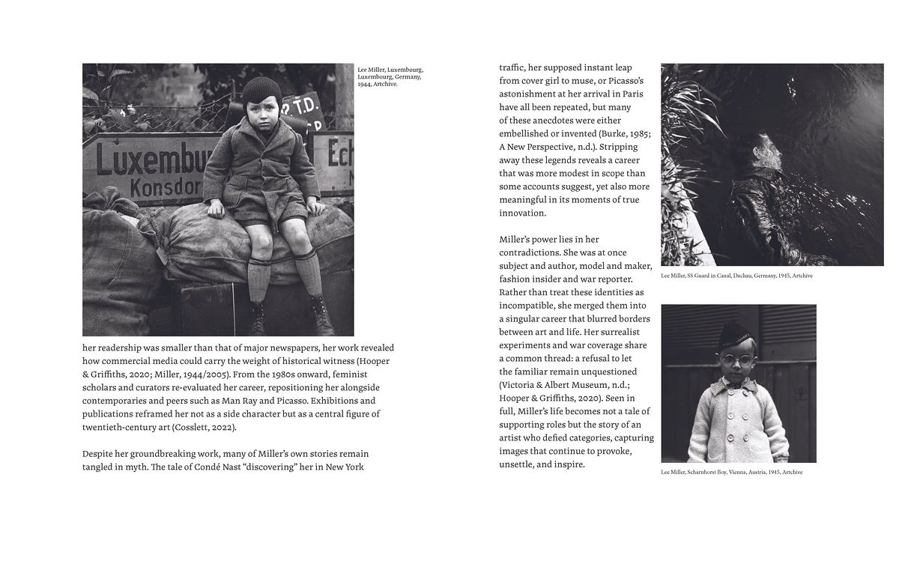

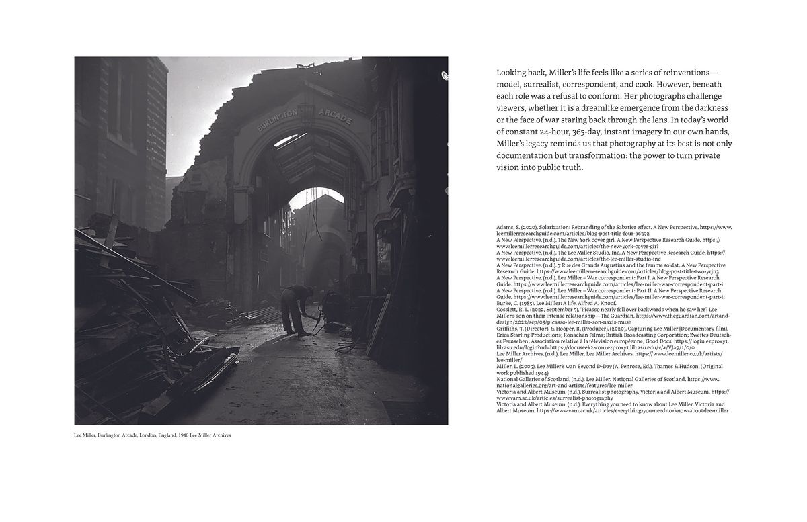
All nine spreads of the finished magazine, covers first. Select any spread to enlarge it. Photographs inside the layouts are credited in each spread’s captions; most are from the Lee Miller Archives.
- Format
- 18-page magazine: front and back covers, opening spread, eight internal spreads
- Tools
- Adobe InDesign, Adobe Illustrator
- Editors
- Saylene Heinsen & Natalie Szerszenski
The Challenge
The biggest challenge in this project was turning a long, detailed article about Lee Miller, someone I've looked at her work over and over again for the past years after reading a book about her work, into a magazine layout that remained clear and easy to read. I had to use basic design tools, typographic hierarchy, grid structure, and the journal’s visual identity—to organize the material and make the whole feature feel consistent from page to page.
I chose Lee Miller because her work bridges several areas of photography, fashion, Surrealism, travel, and war documentation. Her ability to move between different photographic roles made her a compelling subject for an editorial project, especially one that relies heavily on balancing imagery and text. Her life and work naturally lend themselves to visual storytelling, which increased the importance of making careful decisions about pacing, image placement, and how to support the narrative through layout.
The main design challenge was to convert a detailed, research-based article into a layout that remained readable across 18 pages or 9 spreads, ensuring the reader feels assured that the structure supports clarity and flow. The content included dense historical information, multiple image types, captions, citations, and section transitions, all organized through a consistent system of grids, type scales, and spacing. The challenge extended well beyond arranging text within a grid. The layout needed to guide the reader through shifts in the narrative, give the photographs sufficient presence to support the story, and maintain a consistent pace across all eighteen pages. To accomplish this, I had to establish an editorial structure that was organized and steady, yet flexible enough to highlight key moments in Lee Miller’s life and work.
Goals
The main goal of this project was to take a detailed, research-based article about Lee Miller and convert it into a magazine format that a reader could move through without confusion or visual fatigue. This required breaking the text into smaller, well-structured sections, establishing a clear typographic hierarchy, and arranging each spread so the story's progression remained steady and easy to follow.
Maintaining consistency with the Design Through the Decades journal was also a key objective. This included using the custom logo I designed for the journal, applying the Rule of 8s type scale I developed for the magazine, and carrying consistent spacing, alignment, and formatting choices across the cover, interior spreads, images, captions, and citations.
Another goal was to demonstrate disciplined control over the editorial design fundamentals of grid systems, pacing, rhythm, and visual balance. Each layout decision needed to support the content rather than distract from it, allowing the images and text to work together. The aim was to create a publication that felt intentional, organized, and respectful of the article's academic nature, while still giving space to the strong visual elements that define Lee Miller’s work.
Research and References
My research for this project began with the work I completed in the project’s first phase, where I studied Lee Miller’s life and the range of roles she held as a photographer. Understanding her shifts between fashion, Surrealism, travel photography, and war documentation helped me determine how to organize the written material and where the layout needed more visual emphasis or a slower pace.
A primary reference for the design approach was National Geographic. I have subscribed to the magazine since my college years in Mexico, and its method of combining strong photography with long-form text has always been something I have paid close attention to. Their layouts demonstrate how images can carry meaning without competing with the writing, and how spacing, captions, and quiet areas help support complex articles. Studying their covers and interior spreads gave me a clearer sense of how to guide the reader, manage dense content, and use visual rhythm to maintain interest across multiple pages.
For the magazine's structure, I relied on the grid systems I built during the layout exploration phase, such as modular and hierarchical grids, which informed my decisions on pacing and alignment, ensuring a balanced, readable flow throughout the article in line with established editorial design practices.
In the type scale phase, I reviewed the three typographic proportion systems, but ultimately chose the Rule of 8s for the final magazine. This scale provided a predictable, consistent framework for type sizes, making it easier to maintain a stable hierarchy across all 18 pages. Using the Rule of 8s enhanced the article's clarity and contributed to a unified visual system across spreads.
Phase 1: Research & Writing
The first phase of the project centered on research and building the written foundation for the magazine. This work began with a 1,500-word APA-formatted article I developed on Lee Miller. The study covered her early work in fashion, her involvement with Surrealism in Paris, her time in Egypt, and her later role as a war correspondent during the Second World War. Understanding the full range of her career helped me identify the themes that would later guide both the text's structure and the pacing of the visual layout.
During this phase, I gathered high-resolution images that represented the different periods of Miller’s work, following the project’s requirements for image quality and APA captioning. Selecting images from museum archives and verified historical sources ensured accuracy and gave me material that could hold up in a print-style editorial format.
The writing process required organizing dense historical information into a straightforward narrative, which later influenced how the spreads were divided, where sections began and ended, and which moments in her life needed visual emphasis. By completing the research and writing first, I established the framework for the entire magazine design, helping the audience trust the thoroughness of the process.
Phase 2: Visual Identity
The second phase of the project focused on establishing the journal’s visual identity, which served as the foundation for the entire magazine. This work began with a series of hand-drawn explorations of the Design Through the Decades logo. I produced multiple pages of sketches that tested different letterforms, proportions, and arrangements of the journal title. These sketches, visible in the hand-traced sheets I uploaded, show the early experimentation with how the initials and full words could relate to one another across various weights and styles.

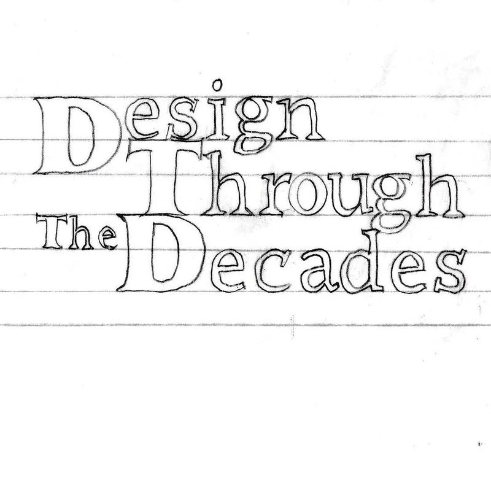

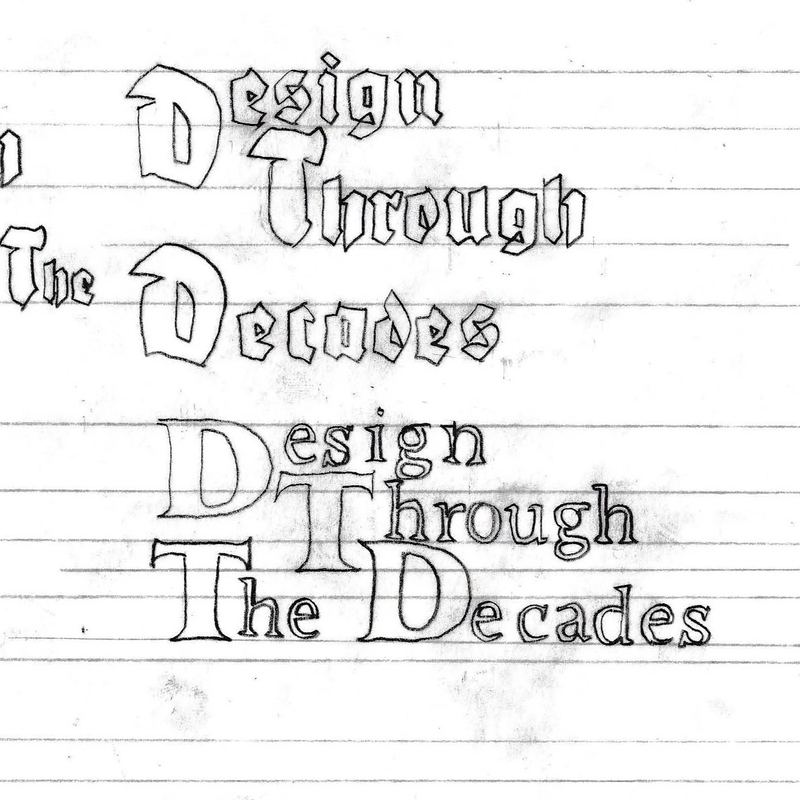

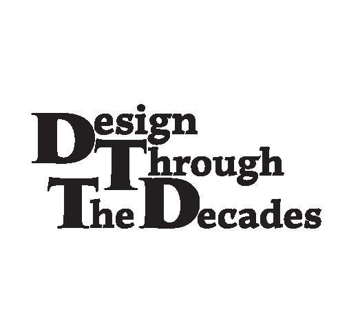
Hand-traced logo sketches and the final logo. Select any image to enlarge it.
To better analyze the shapes and refine the mark's structure, I recorded a time-lapse of the tracing process. This allowed me to identify which forms were strongest and which combinations created a stable presence appropriate for an academic publication. Once the strongest concept emerged from the sketching phase, I rebuilt the logo in Adobe Illustrator. This involved adjusting curves, spacing, alignment, and stroke consistency so the final mark was clean, balanced, and suitable for use across both print and digital contexts.
The completed logo, as shown in the final exported version, became the primary branding element for the magazine and established the typographic tone for the project.
Phase 3: Type Scale Development
The third phase focused on establishing a consistent typographic system that would guide all layout decisions in the magazine. In this phase, I created three mathematical type scales: the Rule of 8s, the Golden Ratio, and the 1.5× scale. Each system allowed me to test how size relationships could create clearer hierarchy and structure across headings, subheads, body text, captions, and pull quotes.
Building these scales helped me compare how each system behaved in longer editorial formats. The Golden Ratio offered strong proportional contrast, while the 1.5× scale produced a more controlled progression. However, the Rule of 8s provided the most predictable rhythm, making it easier to maintain consistency across an 18-page layout. Because the magazine required long, uninterrupted reading, the Rule of 8s' stability became a critical advantage.
As part of this phase, I also tested different font pairings to find a combination that would support both readability and hierarchy. This involved evaluating serif and sans-serif options, comparing x-height and weight contrast, and assessing how the fonts performed at different sizes within each scale. The final pairings were chosen for their clarity and their ability to work well within the type proportions I established.
This typographic groundwork became the backbone of the magazine's design, shaping the reading experience and ensuring that every spread followed a coherent, intentional system.

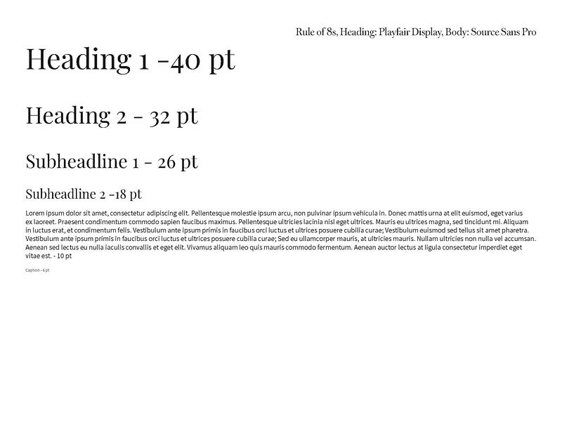

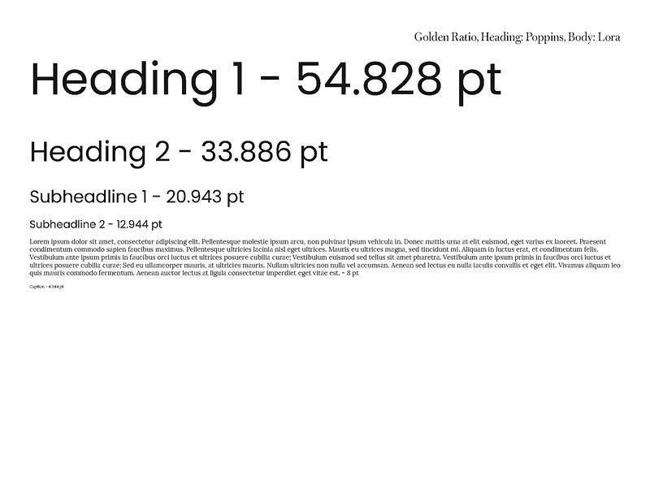

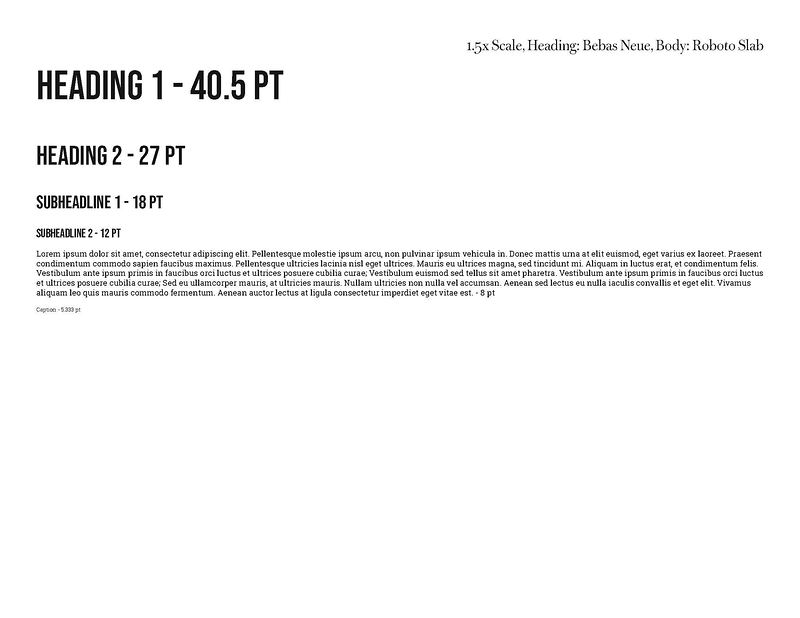
The three type scales tested. The Rule of 8s was used for the magazine.
Phase 4: Layout Exploration
The fourth phase focused on exploring and testing layout structures to support a long-form editorial article. This work began when I built five different grid systems to study how each one influenced pacing, alignment, and visual hierarchy. These grids ranged from simple manuscript structures to more complex modular and hierarchical arrangements. A time-lapse recording of my screen captured the process as I constructed and compared each grid, allowing me to review spacing decisions and evaluate how well each structure handled text blocks, images, captions, and side elements.
Using these grids as a foundation, I created five front and back cover options that experimented with different placements of the logo, title, image area, and supporting text. These variations helped me see how composition and scale could set the tone for the article before the reader even reached the internal spreads.
Once I selected the strongest structural directions, I expanded the layout exploration into the complete magazine project. This phase included building eight internal spreads, each using a grid suited to the content of that particular section. Some spreads required more room for images, while others needed tighter text organization. By assigning a specific grid to each spread, rather than repeating a single layout, I was able to guide the reader through the article with a controlled rhythm that emphasized key moments while preventing visual fatigue.
This exploration established the visual framework for the final magazine, connecting the earlier research and typographic work into a complete editorial system.

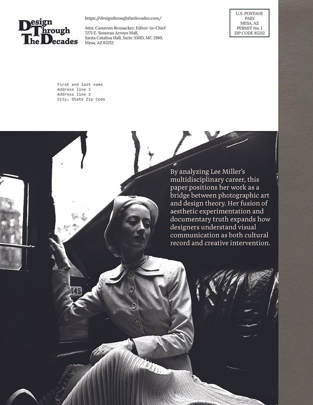

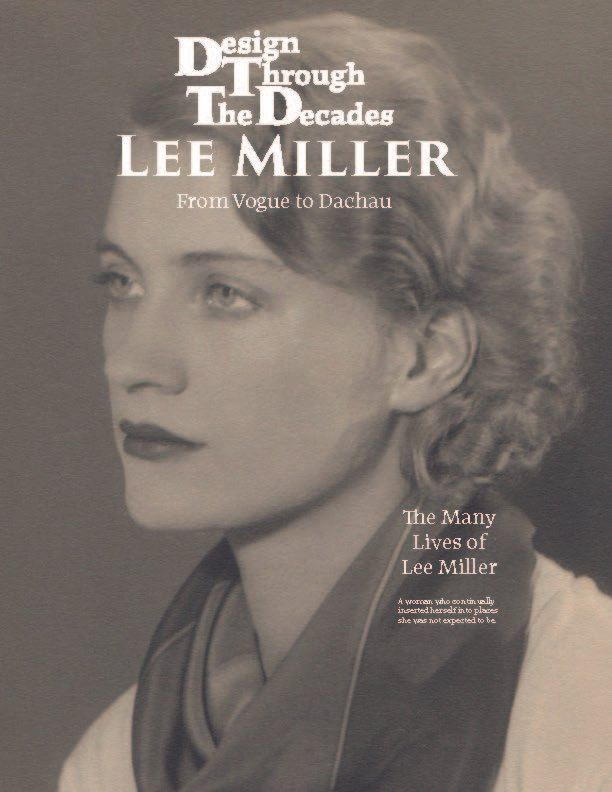

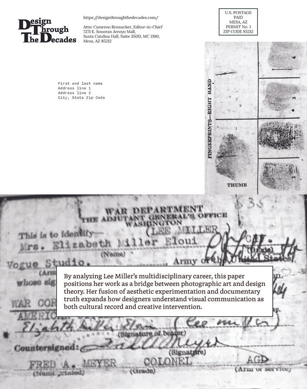

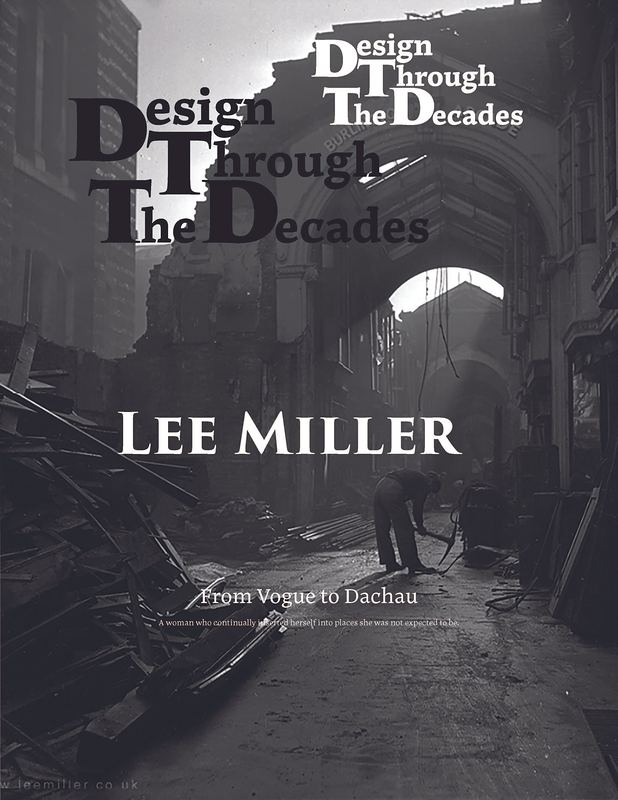

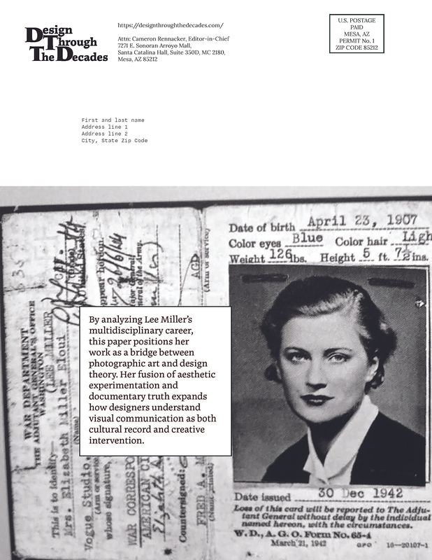

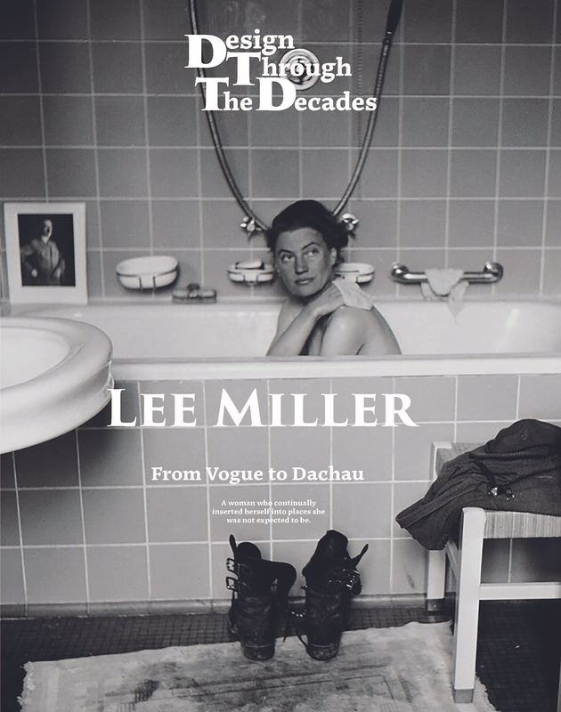

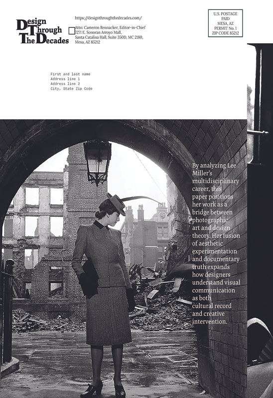

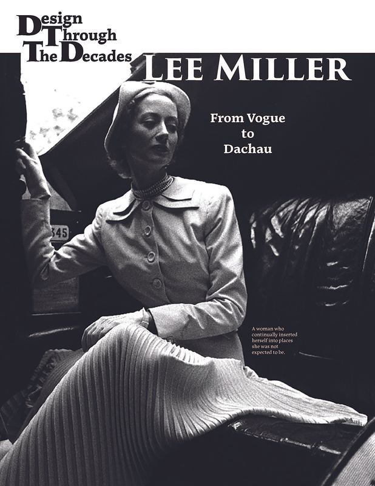

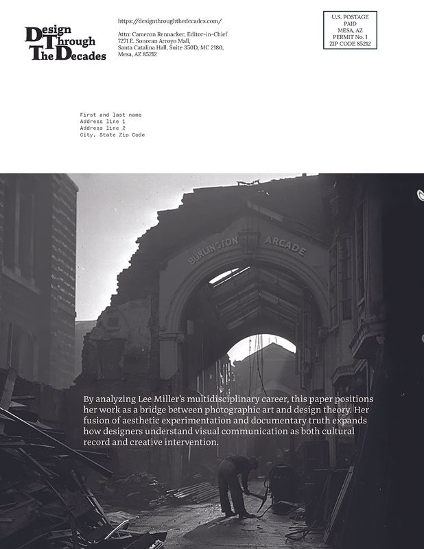

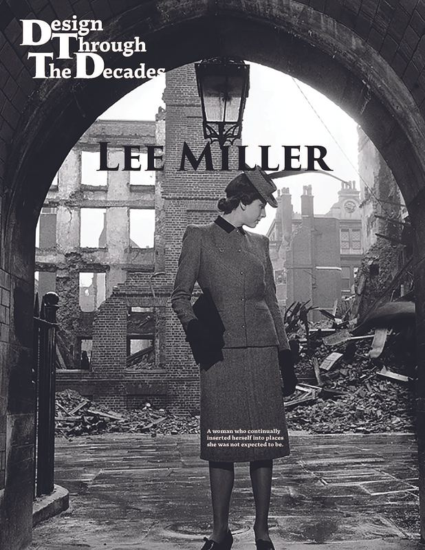
The five front and back cover concepts, back cover first. Photographs: Lee Miller Archives and other sources. Cover design: Hernan Mendez.
Phase 5: Final Magazine Build
The final phase focused on assembling the complete eighteen-page magazine using the systems and decisions established in the earlier stages. This included placing the finished article text, applying the Rule of 8s type scale, selecting appropriate grids for each spread, and integrating the visual identity developed for the Design Through the Decades journal. At this stage, the priority was not experimentation but consistency, ensuring every page followed a clear structure and that readers could move through the article without interruption.
Using Adobe InDesign, I laid out all eighteen pages: the front and back covers, the opening spread, and the eight internal spreads that carry the body of the article. Each spread used a grid chosen during the layout exploration phase, allowing the pacing to shift naturally depending on whether a section required more imagery, tighter text organization, or additional breathing room. Images were placed at high resolution and captioned according to APA guidelines, matching the research completed in the first phase. Citations, figure numbers, and source information were included on the appropriate pages to maintain academic accuracy.
The magazine also incorporated the required byline, editor credits, and peer-review acknowledgments. These elements appear in the final pages of the publication, consistent with professional magazine formatting. Throughout the build, I adjusted tracking, line spacing, and alignment to maintain a steady typographic rhythm. The result is a fully assembled editorial package that reflects both the article's historical content and the design standards expected for publication.
Deliverables
The final deliverables for this project included:
- A complete 18-page magazine, consisting of a front cover, back cover, opening spread, and eight internal spreads.
- The original InDesign project package, including linked images, fonts, and working files.
- A finalized Design Through the Decades logo, delivered in both AI and PDF formats.
- Five front- and back-cover concepts were developed during the layout exploration phase.
- High-resolution images with APA-formatted captions and verified source information.
- Peer-review editor credits and required publication details are integrated into the magazine’s final pages.
Results & Outcomes
The completed magazine resulted in a publication that demonstrates a controlled, structured approach to long-form editorial design. Applying the Rule of 8s type scale established a clear visual hierarchy that remained stable across all eighteen pages. This consistency allowed the article to carry dense historical content without feeling heavy or cluttered. The hierarchy among headings, subheads, body text, captions, and citations remained consistent, reducing visual noise and supporting an uninterrupted reading experience.
The grid choices developed during the layout exploration phase proved effective at scale. Each spread was assigned a grid that matched its content needs, from image-heavy sections to text-driven transitions. This produced a controlled pacing throughout the article: certain spreads opened up to give space to Lee Miller’s strongest photographs, while others tightened to support complex biographical passages. The result was a visual rhythm that felt deliberate, balanced, and aligned with objective editorial standards.
Integrating high-resolution imagery with APA-formatted captions created a professional, academic tone that aligned with the goals of the Design Through the Decades journal. Images were sized appropriately to carry visual weight without overpowering the text. Captions, citations, and reference details reinforced the article's research-based nature while preserving the aesthetic clarity of the design.
The final covers and interior spreads also demonstrated the strength of the visual identity established earlier in the project. The journal logo held its own within the layout, supporting the publication’s tone without distracting from the content. Type scale, spacing systems, and grid alignment created cohesion from the cover through the final bibliography spread.
Overall, the project successfully translated a complex scholarly article into a readable, coherent, and visually structured magazine. The outcome shows a strong understanding of editorial fundamentals, hierarchy, pacing, grid systems, and narrative clarity. It delivers a finished piece that could sit alongside professional academic or design publications. It reflects disciplined decision-making, consistent application of visual systems, and an ability to manage both text and imagery at scale.